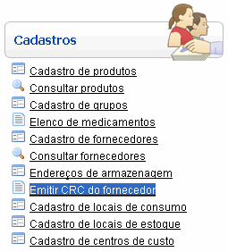
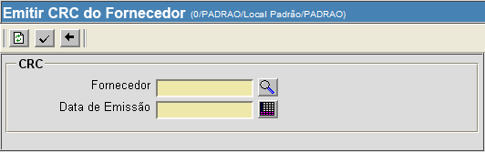
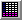

Emitir CRC do Fornecedor [ Voltar ]Utilize este formulário para efetuar a emissão do CRC do fornecedor. O formulário "Emitir CRC do fornecedor" encontra-se dentro do menu "Cadastros. 
Ao clicar no formulário, o sistema exibirá a seguinte tela: 
1°
Passo: informe o número do fornecedor para o qual deseja emitir o CRC. Clique no
botão 2° Passo: especifique a data de emissão do CRC. Clique no botão  [Data] para selecionar a data em um calendário. Dicas para
preenchimento dos campos de data:
Exemplo: se a data
atual é 20/10/2011,
digite "+10"
e pressione a tecla "Enter" para que o sistema retorne o dia 30/10/2011
3° Passo: clique
no botão Observação: a CRC somente poderá ser emitida quando todas as certidões tiverem sido criadas. Para mais informações sobre como emitir certidões, favor ver o manual Cadastro de Fornecedores |

 para concluir
a emissão.
para concluir
a emissão.